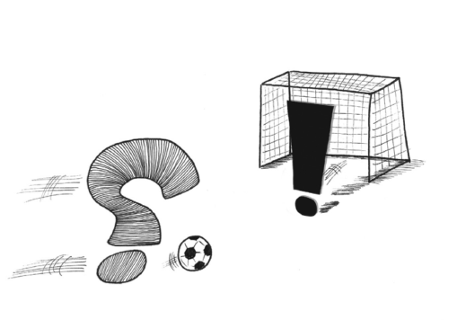
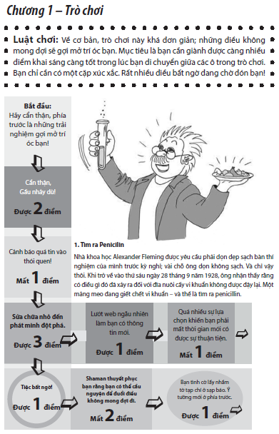

1. Kỳ Vọng 0 – Thực Tế 1

“Điều quen thuộc không bao giờ xảy ra.
Thứ xảy đến lại luôn là điều không mong đợi”
John Maynard Keynes
 Một ngày không giống mọi ngày
Một ngày không giống mọi ngày
Bạn có thể kể ra ít nhất 5 điều bất ngờ trong câu chuyện sau đây hay không?
7 giờ. Sáng thứ hai. Đồng hồ reo vang. Bạn bấm “Snooze” để nướng thêm chút nữa.
Ít phút sau đó, bạn thức giấc, nghĩ đến tất cả công việc phải làm ngày hôm nay. Đã thế, lại còn phải làm vệ sinh buổi sáng.
Một lúc sau, bạn trên đường đến sở làm. Điện thoại di động réo vang. Đã trễ giờ.
Tuần làm việc bắt đầu bằng một buổi họp chán khủng khiếp dưới sự điều khiển của một tay thích chủ trì các cuộc họp nhưng không có năng lực ra quyết định – lạ kỳ là có thể thấy mấy gã này ở bất kỳ văn phòng nào trên khắp thế giới.
Dẫu thế, thời gian còn lại của ngày vẫn trôi đi nhanh chóng. Sếp động viên bạn đeo đuổi một số dự án mới. Bạn gặp lại một người bạn cũ khi ăn bữa trưa. Mọi việc đang tốt đẹp.
Buổi chiều trôi đi không có gì đặc biệt, trừ một lần báo cháy nhầm. Nhưng bạn đã quen với chuyện đó do nó đã réo nhầm khoảng hai mươi lần chỉ nội trong tháng trước.
Trên đường trở về nhà, bạn mua một tờ báo để lát nữa vừa ăn bữa tối với cơm thịt gà vừa xem truyền hình. Tối nay truyền hình không có gì thú vị, bạn đành đi ngủ sớm, đọc vài trang trong quyển sách để trên bàn đã lâu, cũng dễ hiểu thôi, bởi cơn buồn ngủ đã chậm rãi đến, kéo sự tập trung của bạn ra khỏi trang sách mất rồi!
Hầu hết chúng ta đều xem đó là một ngày bình thường. Không có gì đặc biệt, chỉ là một ngày như mọi ngày. Không có gì mô tả ở trên có thể được xem như là “không lường trước”, đúng không? Hoặc là...?
Hãy nghĩ về nhiều điều đã suýt xảy ra trong ngày hôm đó. Bạn gần như đã ngủ quên. Điều đó có thể khiến bạn mất việc. Hoặc bạn có thể đã đụng phải một ai đó trên đường đi làm bởi nếu không, bạn sẽ bị trễ.
Chỉ chút xíu nữa thôi là người bạn cũ đã cho bạn biết một bí mật đen tối nếu không bị một điều gì đó cắt ngang.
Đó có thể là lần cuối cùng chuông báo cháy báo nhầm trước khi đám cháy thật sự bùng lên trong tuần tiếp theo, cướp đi bao nhiêu là sinh mạng đồng nghiệp của bạn vì không ai còn nghiêm túc để ý đến tiếng chuông báo cháy nữa.
Nếu xem xét lại tất cả những gì đã xảy ra trong một ngày như vậy bằng một tư duy khác hẳn, hẳn chúng ta sẽ nhanh chóng thấy rằng phần lớn sự việc là điều bất ngờ. Không phải chỉ những điều suýt xảy ra mà là những biến cố đã xảy ra.
Khoảnh khắc ngay lúc bạn vừa thức dậy, những tiếng chuông đồng hồ và chiếc bàn chải đánh răng buổi sáng. Nhiệt độ ngoài trời chính xác đến hai số thập phân.Những cuộc điện thoại và những người gọi tới. Hương vị bữa ăn trưa và câu chuyện giữa những người bạn cũ rất lâu không gặp. Và những điều khác nữa. Cái chúng ta gọi là cuộc sống thực sự là một dòng chảy đều đặn các biến cố ngẫu nhiên, thậm chí là sự hỗn loạn. Nhưng chúng ta không gọi những điều này là điều không mong đợi. Chúng ta có thể hình dung ra bạn bè hoặc vợ, chồng mình sẽ nói gì nếu ta xem đó là điều không mong đợi và cảm giác chán ngán như thế nào khi các sự kiện đó trở thành điều không mong đợi.
Cái chúng ta gọi là cuộc sống thực sự là một dòng chảy đều đặn các biến cố ngẫu nhiên
Mỗi ngày, chúng ta đều có thể phải đối mặt với những điều bất ngờ, nhưng trong phần lớn các trường hợp, những điều bất ngờ xảy ra đều không gây trở ngại hoặc tác động tới chúng ta nên ta chỉ xem chúng đơn thuần là những điều ngẫu nhiên, chuyện vụn vặt hay là sự tưởng tượng của trí não. Chúng ta dùng cách gọi này cho một số sự kiện nhất định và trong những trường hợp hiếm gặp. Chương này sẽ tìm hiểu khi nào và tại sao chúng ta sử dụng từ “không mong đợi” cũng như cách thức sử dụng từ này.
Sự chú ý là một con đường hai chiều
Sự chú ý của con người tương tự như một thấu kính mà thông qua đó chúng ta nhìn nhận về thế giới, và thật sự lắng nghe, đụng chạm, ngửi thấy cũng như nếm trải cả thế giới. Trong số tất cả những gì xảy ra quanh chúng ta vào một thời điểm nào đó, chúng ta thường tập trung vào một phần rất nhỏ, và khi tập trung, chúng ta sẽ hướng sự chú ý từ trên xuống dưới. Chúng ta quyết định dùng một hoặc một vài giác quan để xem xét một điều gì đó – giống như từ số từ ngữ trên một trang viết khiến ta cảm nhận hương vị của một ổ bánh mì nướng mới ra lò. Chú ý từ trên xuống dưới cũng là cách giúp chúng ta tìm bọn trẻ khi chúng đi lạc ở siêu thị hoặc tìm manh mối để đến được vòng tiếp theo trong trò chơi trên máy tính. Một cách ngắn gọn, bất kỳ khi nào chúng ta sử dụng năm giác quan một cách có chủ ý nghĩa là ta đã vận dụng sự chú ý từ trên xuống dưới. Kiểm soát là từ tốt nhất để mô tả dạng thức chú ý này. Chúng ta ngồi vững chãi ở vị trí ghế tài xế và thế giới diễn ra không ít thì nhiều sẽ theo cách thức chúng ta đã kỳ vọng về nó. Đó là khi người anh em của sự chú ý từ trên xuống dưới thỉnh thoảng lại cho thấy sự hiện diện của mình với tên gọi là sự chú ý từ dưới lên trên. Chúng ta thường nói rằng một điều gì đó “thu hút” sự chú ý của chúng ta, và đó là một cách ví von thích hợp để miêu tả tình trạng chúng ta không thể kiểm soát các giác quan của mình. Một mùi hương lạ thoáng qua. Một thứ gì đó chộp lấy bạn từ phía sau bụi rậm. Một mẫu quảng cáo với giọng điệu thì thầm gợi tình kéo hướng nhìn của bạn ra khỏi bài báo hoặc – hãy cẩn trọng – một xa lộ thênh thang đang mở ra trước mắt bạn. Những thứ xuất hiện trên màn hình rađa theo hướng chú ý từ dưới lên trên chính là thứ chúng ta vẫn thường gọi là điều không ngờ tới. Nhưng đó không phải là tất cả. Chúng ta thường chỉ dành cho “điều kỳ quặc” nào đó một cái nhún vai rồi sau đó lại đi theo lối mòn đã định trước, tiếp tục những gì ta đang làm trước khi có sự xáo trộn sâu sắc đánh thức các giác quan của ta. Để một điều gì đó thật sự được xem là không ngờ tới, nó cần phải vượt qua một số bài kiểm tra phẩm chất khác nữa.
Sức mạnh của sự khan hiếm
Thống kê là nghệ thuật và khoa học về luận giải dữ liệu, và khi các nhà thống kê cho rằng một điều gì đó là không ngờ tới nghĩa là điều đó hiếm khi xảy ra với một mức kỳ vọng nào đó. Hay nói cách khác, kết quả là rất khác xa so với mong đợi. Tuy nhiên, ngôn ngữ khoa học thường che khuất đi ý nghĩa nhân bản thông thường, chẳng hạn số liệu thống kê về số người chết không cho thấy được sự đau khổ và tổn thất thực sự của những người bị ảnh hưởng. Sự hiếm hoi không tự động khiến chúng ta có thể lên mặt tự cao tự đại. Chẳng hạn, năm nhuận là năm tương đối hiếm nhưng có thể tiên đoán được, do đó nó không đủ tiêu chuẩn để được đứng sau hàng rào dây nhung đỏ dành cho VIP và đi vào khu vực “Chỉ dành cho các sự kiện không ngờ tới”. Tiêu chuẩn cần có để được vào khu vực đặc biệt trên là sự kiện đó không chỉ hiếm có, xét về thời gian, mà còn phải hiếm có xét về ý niệm không gian tâm thức. Sự kiện đó cần có ý nghĩa mới lạ, tiên phong thì ta mới gọi nó là không ngờ tới. Frank Knight, người có những ý tưởng đã định hình cho hiểu biết của chúng ta về tính không chắc chắn, đã chia xác suất thành 3 loại. [1] 1 Loại thứ nhất là xác suất cổ điển, trong đó chúng ta biết tất cả các kết cục có thể xảy ra và tần số của mỗi kết cục – ví dụ kinh điển là tung con xúc xắc, xác suất xuất hiện của mỗi mặt trong số sáu mặt là 1/6. Loại thứ hai là xác suất mang tính thống kê, trong đó ta bắt đầu dự đoán kết cục dựa trên cái mà chúng ta đã quan sát được trước đó. Đây là cách mà các nhà khí tượng đã dùng để dự báo thời tiết. Căn cứ vào một số thông số đã biết như áp suất không khí, mùa và sức gió, ta có thể dự báo được thời tiết sẽ diễn biến như thế nào. Cho đến nay, phương pháp này đã rất quen thuộc. Cách tiếp cận thứ ba đối với xác suất là cách tiếp cận của Knight. Knight gọi đó là “ước lượng”, một thuật ngữ được dùng khi “không có căn cứ có giá trị để phân loại các trường hợp”. Nói cách khác, cách này phù hợp với những sự kiện chúng ta chưa từng gặp trước đó hay thậm chí chưa từng tưởng tượng ra, hiếm có về thời gian, và hiếm có về ý niệm không gian tâm thức.
Thật không dễ dàng gì để mọi việc có thể xảy ra đúng đường ray của nó bởi con người sở hữu một năng lực tưởng tượng đặc biệt xuất sắc. Vậy làm thế nào để một sự kiện nào đó lại có thể nhảy vụt đến và làm chúng ta bất ngờ? Câu trả lời là trong khi chúng ta có khả năng tưởng tượng tuyệt vời thì chúng ta cũng là bậc thầy về tự ảo tưởng.
Trong khi chúng ta có khả năng tưởng tượng tuyệt vời thì chúng ta cũng là bậc thầy về sự tự ảo tưởng
Đường sinh mệnh
Michael Shermer đã tạo dựng sự nghiệp khi nghiên cứu vì sao con người có xu hướng tin vào những điều kỳ lạ. Với tư cách là biên tập viên sáng lập của tạp chí Skeptic, Shermer đã viết về tất cả mọi thứ từ những điều khoác lác đến các lý thuyết ngờ vực. “Niềm tin”, Shermer nói, “là trạng thái tự nhiên. Là một người biết hoài nghi mới khó khăn hơn”. 2 Chúng ta thích tin vào một câu chuyện kể đơn giản và chặt chẽ, dù đó là lời giải thích cho những thảm họa hoặc về ý nghĩa cuộc sống, và Shermer gọi đây là xu hướng “mô hình mẫu” – xu hướng nhận thấy những dạng thức hay mô hình mẫu có nghĩa trong những điều ngẫu nhiên vô nghĩa. 3 Một trong những ví dụ tốt nhất về mô hình mẫu là cách chúng ta nhìn nhận cuộc sống của chính mình. Rất ít người xem sự tồn tại của mình là một chuỗi các sự kiện không mong đợi ngẫu nhiên được mô tả ở trên và chúng ta mất nhiều công sức thuyết phục bản thân mình rằng có một kế hoạch tổng thể chi phối hết thảy. Chúng ta vạch ra các kế hoạch tỉ mỉ cho tương lai và cho rằng thành công cuối cùng là do chính những hành động của chúng ta. Chúng ta nói về những thứ như số phận và sự may mắn như thể có một kịch bản vô hình nào đó tồn tại cho cuộc sống của chúng ta. Chúng ta đắm chìm trong niềm tin tôn giáo về một kiếp sau và hy vọng những đấng quyền năng sẽ tưởng thưởng những việc làm tốt của ta hoặc trừng phạt kẻ xấu. Người tin tưởng lẫn kẻ hoài nghi đều rất miễn cưỡng sử dụng các từ “may rủi” hoặc “vô nghĩa” khi miêu tả cuộc sống của mình. Chúng ta có xu hướng nghĩ về những ngày trong cuộc đời mình như thể chúng ở trên một quỹ đạo – hãy gọi nó là đường sinh mệnh. Cũng giống như những hạt chuỗi trên một chiếc vòng đeo cổ, cuộc sống của chúng ta là những sự liên kết giữa các sự kiện ngẫu nhiên mà chúng ta hy vọng và cầu nguyện là chúng sẽ có ý nghĩa. Khi một điều gì đó xảy đến phá vỡ khuôn mẫu cuộc sống, chúng ta sẽ phản ứng lại với thái độ hoang mang.
Cuộc sống của chúng ta là những sự liên kết giữa các sự kiện ngẫu nhiên mà chúng ta hy vọng và cầu nguyện là chúng sẽ có ý nghĩa
Trật đường ray
Bạn tôi, Joe, đã cùng vợ đi du lịch đến miền nam nước Pháp vào mùa thu năm 2002. Joe đang ở những năm đầu của tuổi bốn mươi và rốt cuộc đã gặp được tình yêu của cuộc đời mình mới vài năm trước đây. Họ vừa chuyển đến một ngôi nhà mới khá đẹp ở ngoại ô Minneapolis và dự định có con. Hiện tại, họ đang ở Cannes để vợ Joe có thể tham dự một hội nghị và họ có thể cùng nhau tận hưởng khu nghỉ mát nổi tiếng Riviera. Khi máy bay hạ cánh, Joe cảm thấy mệt mỏi sau chuyến bay dài và đã ngủ trưa một chút trong phòng nghỉ của khách sạn.
Joe không bao giờ thức dậy nữa.
Một động mạch phổi bị vỡ đã giết chết anh.
Khi tôi gặp người vợ góa của anh vài tháng sau đó tại lễ truy điệu ở Manhattan, chị nói rằng cuộc sống của chị đã bị trật khỏi đường ray có sẵn.
Câu chuyện buồn này minh họa cho cách thức chúng ta thường nhìn nhận cuộc sống của mình như một câu chuyện phát triển đều đặn tuyến tính, và khi thực tế xảy ra, chúng ta lại thấy mình như ở trong một vùng đất hoang sơ, không biết chắc đường ray có thể dẫn ta đi về đâu. Hoặc thậm chí là chưa từng có bất kỳ một đường ray nào cả.
Điều này không chỉ áp dụng cho các cá nhân. Ví dụ như, các tổ chức hoạch định ngân sách và tuyên bố về tầm nhìn nhằm vạch ra một lộ trình rõ ràng cho tương lai. Việc hoạch định phát triển một cách đều đặn tuyến tính cũng không phải là một hiện tượng mới lạ đặc biệt. Ngược lại, hầu hết các nền văn hóa mà chúng ta biết đến đều đã có một số hình mẫu để lý giải về quỹ đạo của cuộc sống. Có lẽ hình mẫu gần nhất với ý tưởng đường sinh mệnh là khái niệm của người Na Uy cổ xưa về wyrd 4 (số phận) hoặc sợi chỉ số phận. Những sợi chỉ số phận được giăng bởi các nữ thần số phận, gồm ba người phụ nữ đã dệt nên số phận của con người trên một con suốt. Các sợi chỉ số phận có thể dài và thẳng hoặc ngắn và rối rắm.
Ngày nay, chúng ta có thể cười nhạo những điều mê tín của những tên cướp biển Bắc Âu thế kỷ thứ VIII lập dị, nhưng hình mẫu ý niệm xem cuộc sống như là một câu chuyện phát triển đều đặn theo đường thẳng vẫn còn tồn tại. Ai đó từng nói rằng trong khoa học tất cả các hình mẫu đều sai, nhưng một số hình mẫu là hữu ích, và chúng ta có thể áp dụng lập luận giống như vậy cho hình mẫu ý niệm này. Chính sự tự ảo tưởng – sự bóp méo thực tế – đã giúp chúng ta lên kế hoạch và xem cuộc sống của mình là một điều gì đó có ý nghĩa.
Chữ S như những sự thay đổi
Trong nỗi hoang mang của những người bị bệnh tâm thần cũng như những người mơ mộng hão huyền, thực tế không xảy ra theo cách thức chúng ta mong muốn và “điều không mong đợi” là tên mà chúng ta gán cho thực tế khi thực tế va chạm và mâu thuẫn với kỳ vọng của ta. Những va chạm này chắc chắn sẽ xảy ra thường xuyên hơn trong thời đại có nhiều biến động lớn – về kinh tế, chính trị hay công nghệ. Ở một thời điểm bất kỳ nào đó, hầu hết mọi thứ đều trì trệ tại chỗ. Tình trạng này là do sự cân bằng quyền lực giữa các lực lượng thúc đẩy sự thay đổi và những lực lượng chống lại sự thay đổi. Sự thay đổi xảy ra khi các lực lượng chống lại sự thay đổi bị suy yếu hoặc khi các lực lượng thúc đẩy sự thay đổi được mạnh lên. Tùy thuộc vào việc các lực lượng này suy yếu hoặc mạnh lên nhanh hay chậm mà sự thay đổi sẽ diễn ra chậm rãi và từ từ hoặc bùng nổ như cuộc cách mạng. Trong quyển sách này, tôi tập trung quan tâm đến loại thay đổi thứ hai. Sự thay đổi từ từ, chẳng hạn như sự lão hóa hay sự tiến hóa, là cái vẫn song hành cùng chúng ta trong đời sống hàng ngày, và sự chậm rãi của chúng thường khiến chúng ta không nhận ra chúng – hầu hết chúng ta tự xem mình như đang ở tuổi hai mươi ba cho đến ngày chúng ta phát hiện ra một khối u khó chịu ở đâu đó trên cơ thể hay khi điệu nhảy của ta không còn được xem là hợp thời nhiều nữa. Mặt khác, sự thay đổi nhanh chóng làm chúng ta bất ngờ và vỡ mộng. Tác giả, nhà hoạt động cánh tả Naomi Klein chỉ ra rằng sự thay đổi nhanh chóng và gây sốc – chẳng hạn cơn bão xoáy Katrina ở New Orleans hay sự sụp đổ tài chính của Iceland – khiến chúng ta bị đứt mạch câu chuyện. Chúng ta không biết mình đang nhìn nhận và trải nghiệm điều gì. Các lý thuyết gia về sự đổi mới hay nói về một đường cong chữ S trong đó không có điều gì xảy ra, rồi sau đó tất cả mọi thứ thay đổi, giống như sự uốn cong của chữ S. Hãy nghĩ về mạng Internet. Người ta có thể truy lại cội rễ của Internet, xuất hiện từ những năm 1960 nhưng Internet đã ngủ yên trong một thời gian dài, chỉ những người có hiểu biết và đam mê công nghệ nhất hoặc các viện nghiên cứu mới sử dụng Internet. Sau đó, với sự phát minh ra World Wide Web và trình duyệt web Mosaic, Internet được sử dụng bùng nổ vào những năm đầu của thập kỷ 1990. Đầu tiên không có gì cả. Kế đó là tất cả mọi thứ. Trong các bước phát triển, ta cũng có thể nhận ra cùng một loại quỹ đạo như trên, chẳng hạn như sự sụp đổ của Nam Tư và Liên Bang Xô Viết trong những năm đầu 1990 hay sự xuất hiện của iPod và Twitter trong những năm 2000.
Như cách nói của sử gia Harvard Niall Ferguson: “Sẽ ra sao nếu lịch sử diễn ra không ổn định, biến động thất thường chứ không theo chu kỳ và diễn biến chậm rãi – có lúc gần như tĩnh lặng nhưng cũng có khả năng tăng tốc đột ngột như một chiếc xe hơi thể thao? Sẽ ra sao nếu [sự thay đổi] đã không xảy ra qua một số thế kỷ giờ lại đến một cách bất thình lình, như một kẻ trộm trong đêm tối?” 5
Chính trong đường đi lên đột ngột, sắc nét của chữ S – dĩ nhiên, trong thực tế cũng có khi bị đảo ngược và trở thành một sự giảm sút đáng kể – chúng ta đã bị mất phương hướng và bất ngờ trước những diễn biến mới mẻ, lạ lẫm xảy ra xung quanh ta. Điều mà đường cong chữ S đi xuống là chúng ta có một phạm vi của điều mong đợi, giống như một màn hình radar, trong đó có một số điều nào đó là phổ biến và một số điều khác thì không. Tuy nhiên, phạm vi của những điều mong đợi này có tính linh hoạt và thích ứng cao, đó là lý do vì sao đường cong chữ S cuối cùng lại phẳng ra. Các thị trường trở nên bão hòa và bất ổn chính trị lắng xuống tạo nên một mức ổn định mới.
Các thành phần của tính không thể tiên đoán
Để làm sáng tỏ và tóm tắt định nghĩa thường dùng của xã hội về từ “không mong đợi”, tôi đã phát triển công thức sau đây:
ĐIỀU KHÔNG MONG ĐỢI = (S + M + A) x P
S = tốc độ mà sự kiện được mô tả là “không mong đợi” xảy ra. Tốc độ, như Einstein từng chứng minh, là tương đối. Một nhà khảo cổ và một phát thanh viên tin tức sử dụng các từ “không mong đợi” hay “một cách bất ngờ” để chỉ những điều hoàn toàn khác nhau, nhưng cả hai người đều muốn nói đến một sự kiện nào đó bằng cách này hay cách khác đã phá vỡ các hình mẫu mà họ hằng mong đợi – dù điều đó phải mất hàng triệu năm hay chỉ trong vài phần nghìn giây.
M = tầm quan trọng của chính sự kiện. Hãy nhớ lại một ngày bình thường đã được mô tả trong phần giới thiệu của chương này. Lý do chúng ta không xem nhiều sự kiện tình cờ, ngẫu nhiên là điều không ngờ tới là vì chúng nhỏ nhặt và không đáng kể. Một người lạ mặt không quen biết trên xe buýt không có ý nghĩa gì đối với bạn, trừ khi hóa ra ông ta là một người bà con mất liên lạc đã lâu, người mà bạn nghĩ rằng đã chết, hoặc ông ta đang mang một ba lô đầy chất nổ và kích nổ nó trên xe buýt. Tầm quan trọng càng lớn – chẳng hạn như tính bằng số lượng người chết hoặc bị thương – sự kiện càng được xem là không mong đợi.
A = kết quả của sự kiện. Tầm quan trọng và kết quả thực sự có liên quan nhưng không nhất thiết phải tương quan với nhau. Hai chiếc Boeing 747 suýt đụng nhau trên bầu trời Heathrow quan trọng hơn hai chiếc Ford Sierras chật vật để tránh đụng nhau trên đường M25, nhưng nếu máy bay bay về phi trường an toàn trong khi mấy chiếc xe Ford lại gây ra vụ ách tắc giao thông trên đường cao tốc nghiêm trọng nhất trong lịch sử, chắc chắn chúng ta sẽ gọi sự kiện ách tắc giao thông là “không mong đợi” hơn trong hai sự kiện trên.
P = ý nghĩ đã có từ trước. Cuối cùng là một yếu tố gia tốc, chính là những ý nghĩ đã có từ trước của chúng ta. Hãy nghĩ về phạm vi của những kỳ vọng. Vụ nổ súng AK-47 là sự kiện xảy ra hàng ngày trong một khu vực chiến tranh nhưng sẽ khiến mọi người phải ngã ra sàn nhà trong nỗi hoang mang nếu nó xảy ra tại bưu điện địa phương của bạn vào một sáng thứ Hai. Tùy thuộc vào việc chúng ta đang ở đâu và vào lúc nào, định nghĩa của chúng ta về điều không mong đợi sẽ thay đổi. Ngoài ra, trước khi các sự việc xảy ra thì người ta thường ít ngờ tới chúng hơn – ví dụ như các thủ tục an ninh hàng không trước và sau tháng 9 năm 2001 chẳng hạn.
Thách thức và cơ hội
Các kênh tin tức và những nhà tiên tri về ngày tận thế đã sử dụng thay thế cho nhau các từ không mong đợi và không an toàn trong thập kỷ qua như thể cách nói một thế giới không thể đoán trước được là đồng nghĩa với sự kém an toàn hơn. Việc chúng ta sợ hãi điều không mong đợi và làm ầm ĩ quá thể về nó là đúng hay sai?
Ở một mức độ nào đó, câu trả lời là đúng. Các cơ chế gìn giữ hòa bình áp dụng sau năm 1945 rất xuất sắc trong việc ngăn chặn một cuộc chiến tranh như chiến tranh thế giới lần II nhưng lại kém hiệu quả khi áp dụng trong các cuộc xâm lược không cân sức diễn ra ở các nơi như Iraq, Afghanistan hay Somalia. Trong cuộc nói chuyện với các thành viên của lực lượng vũ trang Thụy Điển, tôi được bảo rằng trong bối cảnh thù địch mà Thụy Điển có khả năng phải đối mặt ngày nay, có kẻ thù là nước Nga thì tốt hơn: “Nước Nga là nước có thể dự đoán được một cách tương đối. Chúng ta sẽ thấy cách họ tiến vào và thậm chí họ còn có thể báo trước (nếu họ chuẩn bị xâm lược Thụy Điển). Ngày nay, để khiến cho một quốc gia mất ổn định thì chỉ cần một vài cá nhân. Điều này đặt ra nhiều thách thức hơn cho chúng ta với tư cách là một tổ chức.” 6
Vậy ta hãy thay đổi câu hỏi. Thay vì hỏi rằng có phải thế giới ngày càng khó dự đoán hơn không và việc khó dự đoán này sẽ dẫn dắt ta đến đâu, ta hãy nghĩ xem liệu ta sẽ ở đâu nếu cuộc sống không có những điều không mong đợi. Hãy nghĩ về tất cả những điều trong cuộc sống được xây dựng trên điều không mong đợi. Trò đánh bạc sẽ về đâu nếu không có điều không mong đợi? Còn sự hồi hộp khi xem một trận bóng đá trực tiếp thì sao? Hay các cuốn tiểu thuyết, sách, phim hay kịch có chủ đề về điều không mong đợi thì thế nào? Đây là những thứ cần có yếu tố không thể dự đoán được để tạo ra sự hứng thú nhập cuộc. Trong những trường hợp này, tính có thể dự đoán được sẽ trở thành một lý do để người ta không thích và không muốn xem nữa.
Kinh dị và hài hước là hai thể loại dùng điều không ngờ tới để tạo ra hiệu quả mong muốn. Truyện cười được xây dựng quanh một bước ngoặt trong đó cốt truyện có một chỗ rẽ bất ngờ làm chúng ta cười. “Kinh dị có thể rất giống với hài kịch”, đạo diễn phim Sam Raimi nói, “cách thức bạn xây dựng những ý nghĩ trông mong nơi khán giả và dẫn dắt họ. Cao trào trong một câu chuyện đùa không khác biệt so với cao trào trong một cảnh phim kinh dị. Mỗi loại đều dẫn đến một phản ứng nghe-nhìn rõ rệt, và tự nhiên nơi người xem.” 7
Các bước ngoặt ấn tượng trong nghệ thuật cũng chính là điều khiến cho một mẫu quảng cáo đạt được hiệu quả cao. Chuyên gia về xây dựng thương hiệu Marty Neumeier nói rằng “bộ não của chúng ta hoạt động như một bộ lọc để bảo vệ ta khỏi chết ngộp bởi quá nhiều thông tin, do đó [chúng ta trở nên] tự động chỉ chú ý đến những gì khác biệt mà thôi”. 8 Mọi chiến dịch quảng cáo được cho là thành công đều đã vượt qua được số đông lộn xộn và thâm nhập vào não bạn bởi sự khác biệt và tính bất ngờ của quảng cáo đó trong thế giới vốn đầy các thói quen thông thường.
Nói cách khác, điều không mong đợi là một con dao hai lưỡi. Nó có thể khiến ta kêu trời trong một số trường hợp, khiến ta giận phát khóc trong những trường hợp khác và khiến ta mỉm cười vui sướng vào những khoảnh khắc khác nữa..Chương tiếp theo sẽ tập trung vào những gì thực sự xảy ra trong bộ não của chúng ta khi bị điều không mong đợi tấn công.

[1] . Chú thích được trình bày ở cuối quyển sách.